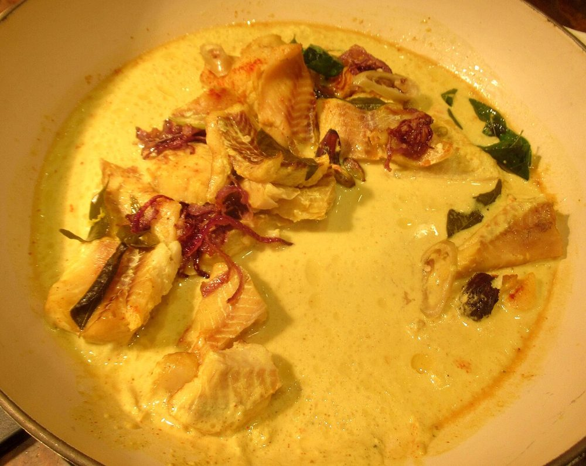

Contains: fish
Ingredients
Quantities for 4.
- 700g, firm white, cut into 4cm steaks or fillets Fishseer, kingfish or pomfret all hold together
- 400ml thick, plus 300ml thin Coconut Milkcanned works: dilute half the tin for the thin milk
- 2 medium, thinly sliced Onion
- 6, sliced Shallotoptional
- 3cm piece, julienned Ginger
- 6 cloves, sliced Garlic
- 4, slit lengthways Green Chillithe heat here comes from green chilli, not powder
- 2 medium, cut into thick rounds Tomato
- 1 tsp, divided Turmeric
- 1 tsp, coarsely ground Black Pepper
- 3 Cloves
- 1 x 3cm stick Cinnamon
- 3, bruised Cardamom
- 2 sprigs Curry Leaves
- 1 tbsp juice Lemon
- 3 tbsp Coconut Oil
- 1.25 tsp, or to taste Salt
Cookware
stovetop
Checked against the ingredient list for ten allergens: milk, egg, fish, crustaceans, tree nuts, peanuts, sesame, mustard, soy and gluten. Brands vary, so read the label on anything new to you.
Before you start
- Marinate the fish with 1/2 tsp turmeric, 1/2 tsp salt and the lemon juice for 15 minutes.
- Separate your thick and thin coconut milk into two jugs before you start; they go in at different moments and mixing them up will split the stew.
- Cut the tomato into thick rounds rather than dice so it holds its shape in the finished stew.
Method
- Heat 2 tbsp coconut oil in a wide shallow pan and sear the marinated fish for 1 minute a side, just to firm the surface, then lift it out.One minute only. The fish finishes in the stew, and overcooked fish will fall apart later.
- Add the remaining oil and fry the cloves, cinnamon and cardamom for 20 seconds until fragrant.
- Add the sliced onion, shallot, ginger, garlic and green chillies and cook over medium-low heat 8-10 minutes until completely soft but still pale.Do not let the onions brown. A molee should stay ivory-white. Colour in the onions means colour in the stew.
- Sprinkle in the remaining turmeric and the black pepper and stir for 30 seconds.
- Pour in the thin coconut milk with 1 sprig of curry leaves and the salt and simmer 6-8 minutes until slightly reduced.
- Slide the fish back in along with the tomato rounds and simmer very gently 4 minutes, spooning gravy over the pieces rather than stirring.
- Lower the heat to its minimum, pour in the thick coconut milk and swirl the pan to combine.Never boil after the thick milk goes in. It curdles into grains and cannot be brought back.
- Heat through for 2-3 minutes until the surface just trembles and the fish flakes when nudged with a spoon.
- Add the second sprig of curry leaves, taste for salt and pepper, and take off the heat.
- Rest 5 minutes before serving with appam or plain rice.
Safe temperatures: Fish is done at 63°C / 145°F, or when it turns opaque and flakes easily. Reheat leftovers to 74°C / 165°F. FoodSafety.gov
Storage
Keeps 2 days refrigerated. Reheat over the lowest heat without boiling, or serve at room temperature. Do not freeze. The coconut milk separates.
Nutrition Medium estimate
High protein: 39 g a serving, 30% of the calories
| Per serving420 g | Per 100 g | |
|---|---|---|
| Calories | 520 kcal | 124 kcal |
| Protein | 39.3 g | 9 g |
| Carbohydrate | 13.9 g | 3 g |
| of which sugars | 4.4 g | 1 g |
| Fibre | 2.4 g | 1 g |
| Fat | 35.2 g | 8 g |
| of which saturated | 28.0 g | 7 g |
| of which unsaturated | 4.2 g | 1 g |
Ingredients given to taste count as zero, so the real figures run a little higher. Nearest database match used for curry leaves. Estimated from raw ingredients using USDA FoodData Central.
More like this: Gluten-free Indian recipes · Dairy-free Indian recipes · Kerala recipes
Times, yields, allergens and nutrition are guidance. Use your own judgement on doneness and on storing. More in About.